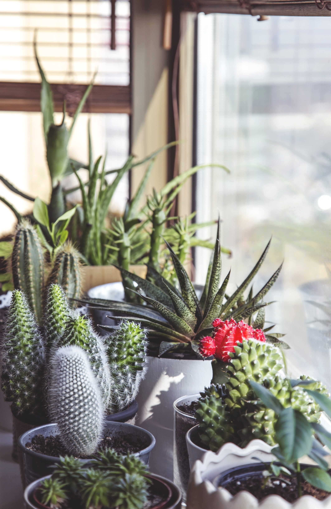
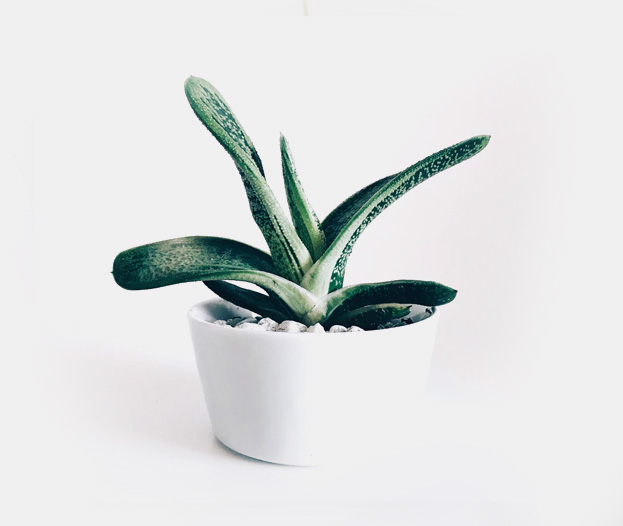
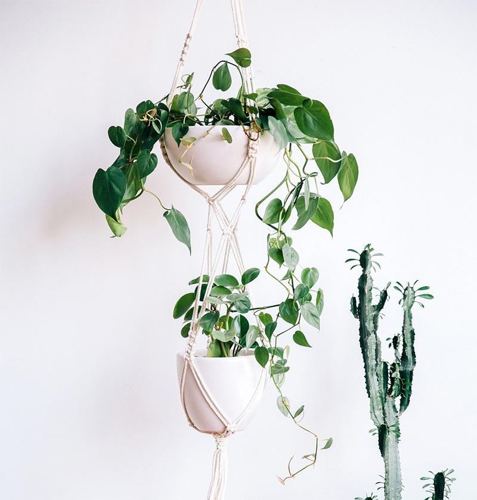

PLANTS IN THE INTERIOR
How To Use Plants In The Interior
Plants are as important as other accessories in the space. Well-chosen plants — artfully displayed — enhance your home’s unique look and make it feel healthier and more connected with nature. In this article I will introduce you to the most beautiful indoor plants and creative ways to use them in the interior.